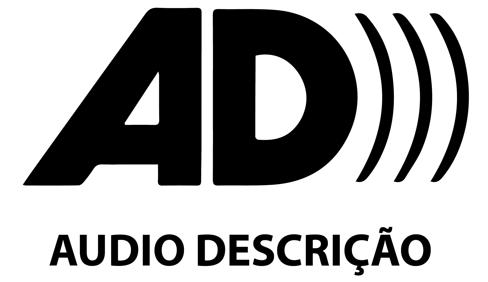

AUDIOGUIA
Texto Curatorial -
Guarani
Voz de Jeferson Xondaro (Oz Guarani)
Texto Curatorial - Português
Texto de Apresentação
Fala de Maurício Yanomami
sobre Casa dos Espíritos
Ficha Técnica
AUDIOGUIA - Todos os direitos reservados 2022 - audioguia.com.br